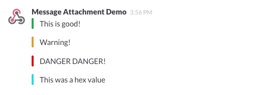
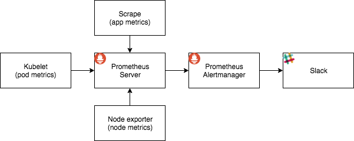

Alerts§
We use Prometheus to collect metrics, and can trigger alerts based on these metrics.
Alerts are specified in their own Kubernetes resource called alerts as we have made our own operator called Alerterator.
Getting started§
To get started using Alerts we need to have a yaml-file describing our rules. You can start of with our recommended alerts (made by contributions from our users!).
Usually it's simplest to just call this file alerts.yaml, which we will do in this example.
You can see the content of the file below, and you will see that we only notify Slack, but you can add more receivers.
apiVersion: "nais.io/v1"
kind: "Alert"
metadata:
name: nais-testapp
namespace: aura
labels:
team: aura
spec:
receivers: # receivers for all alerts below
slack:
channel: '#nais-alerts-dev'
prependText: '<!here> | ' # this text will be prepended to the Slack alert title
alerts:
- alert: Nais-testapp unavailable
expr: 'kube_deployment_status_replicas_unavailable{deployment="nais-testapp"} > 0'
for: 2m
action: Read app logs(kubectl logs appname). Read Application events (kubectl descibe deployment appname)
description: The app might crash sometimes due to startup errors
documentation: https://github.com/navikt/aura-doc/naisvakt/alerts.md#app_unavailable
sla: respond within 1h, during office hours
severity: danger
- alert: CoreDNS unavailable
description: CoreDNS unavailable, there are zero replicas
expr: 'kube_deployment_status_replicas_available{namespace="kube-system", deployment="coredns"} == 0'
for: 1m
action: kubectl describe pod -l app=nais-testapp
documentation: https://github.com/navikt/aura-doc/naisvakt/alerts.md#coredns
sla: respond within 1h, solve within 4h, around the clock
severity: danger
Deployment§
If you already use nais/deploy, adding a new deploy-action is rather simple. Create a file called .github/workflows/alert-deploy.yaml
name: Deploy alerts to NAIS
on:
push:
branches:
- master
paths:
- 'alerts.yaml'
- '.github/workflows/alerts.yaml'
jobs:
apply-alerts:
name: Apply alerts to cluster
runs-on: ubuntu-latest
steps:
- name: Checkout code
uses: actions/checkout@v2
- name: deploy to dev
uses: nais/deploy/actions/deploy@v1
env:
APIKEY: ${{ secrets.NAIS_DEPLOY_APIKEY }}
CLUSTER: dev-fss
RESOURCE: /path/to/alerts.yaml
- name: deploy to prod
uses: nais/deploy/actions/deploy@v1
env:
APIKEY: ${{ secrets.NAIS_DEPLOY_APIKEY }}
CLUSTER: prod-fss
RESOURCE: /path/to/alerts.yaml
You can also add /path/to/alerts.yaml to RESOURCE in a previous workflow, just remember to escape your expressive descriptions.
Different receivers/notifications§
Alerterator supports three different types of notification, Slack, E-mail, and SMS.
In our spec we follow the naming convention of Alertmanager and call it receivers.
Take a look below too see exactly how each receiver is configured.
Slack§
spec:
receivers:
slack:
channel: '#teamname-alerts'
prependText: '<!here>'
Slack will always notify you when an alert is resolved.
E-mail§
spec:
receivers:
email:
to: 'kari.nordmann@nav.no'
send_resolved: 'true'
send_resolved can be set to true if you want to receiver notification for when an alert is resolved.
SMS§
spec:
receivers:
sms:
recipients: '12345678,8764321'
send_resolved: 'false'
send_resolved can be set to true if you want to receiver notification for when an alert is resolved.
How to write a good alert§
Writing the expr§
In order to minimize the feedback loop we suggest experimenting on the Prometheus server to find the right metric for your alert and the notification threshold.
The Prometheus server can be found in each cluster, at https://prometheus.{cluster.ingress} (i.e. https://prometheus.dev-gcp.nais.io).
You can also visit the Alertmanager at https://alertmanager.{cluster.ingress} (i.e. https://alertmanager.dev-gcp.nais.io) to see which alerts are triggered now (you can also silence already triggered alerts).
Expressive descriptions or actions§
You can also use labels in your notification by referencing them with {{ $labels.<field> }}.
For example:
{{ $labels.node }} is marked as unschedulable
turns into the following when notifying:
b27apvl00178.preprod.local is marked as unschedulable
Note that the query decides which labels are available, since the labels correnspond to the field names in the document that is the query result. To see which labels are available for your specific query, run your query on the Prometheus server. Here's an example (remember to connect your naisdeveice).
You can read more about this over at the Prometheus documentation and at the Kubernetes documentation of exposed metrics.
Labels and nais/deploy§
If you are using labels and variables with nais/deploy, you need to remember to escape the labels used for the alerts. See deployment#escaping-and-raw-resources for how.
Value of expression§
You can get the value of your expression with $value
Target several apps or namespaces in a query§
Using regular expression, you can target multiple apps or namespaces with one query. This saves on repeating the same alert for each your apps.
absent(up{app=~"myapp|otherapp|thirdapp"})
Here we use =~ to select labels that match the provided string (or substring) using a regular expression. Use !~ to negate the regular expression.
When doing this, it can be smart to use labels (mention above), to list which namespace the alert is tied to.
Use the kubernetes_namespace label in your action or description by adding {{ $labels.kubernetes_namespace }}, and it will write the namespace for the app that is having problems.
Slack§
Notify @here and @team§
Slack has their own syntax for notifying @channel or @here, respectively <!channel> and <!here>.
Notifying a user group on the other hand is a bit more complicated.
The user group @nais-vakt is written <!subteam^SB8KS4WAV|nais-vakt> in a Slack alert message, where SB8KS4WAV is the id for the specific user group, and nais-vakt is the name of the user group.
You can find the id by right clicking on the name in the user group list. Where last part in the URL is the id. The URL will look something like the one below:
https://nav-it.slack.com/usergroups/SB8KS4WAV
Examples of the different Slack/severity colors§
Slack alerts supports colors.
The severity field defines the color (good is results in a green message, warning in a yellow and danger in a red).
If you want to define another color, specify the wanted hex code as severity instead of the pre-defined words.

Flow§
